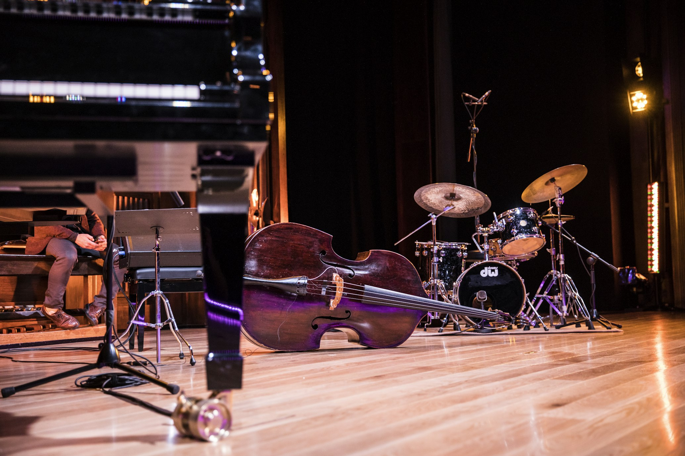

我们的音乐伙伴
全球顶级乐器品牌与教育机构官方合作
施坦威
钢琴合作伙伴
雅马哈
乐器官方伙伴
罗兰
数字乐器支持
芬达
吉他战略伙伴
英皇考级
官方考点
舒尔
音频设备

玩转乐队课
打破一对一枯燥，组建少儿摇滚/爵士小乐队。从第一次合奏开始爱上音乐。键盘、吉他、鼓、贝斯同步训练。
🎸 合奏意识🥁 节奏感强化🎤 舞台实践
演奏家导师团
来自爱乐乐团、上海音乐学院等背景的导师亲自授课。每季度开设大师课，一对一指点演奏细节与音乐表现力。
旅美钢琴家爵士吉他手
黄黑键的独特之处
不只教乐器，更塑造音乐素养
🎼
体系化课程
从启蒙到专业，覆盖英皇/国内考级，乐理+演奏+视唱练耳融合。
📀
智能陪练系统
课后APP实时纠错，练习数据同步老师，家长随时掌握进度。
🎤
年度音乐节
所有学员登上Livehouse舞台，专业录制个人演出视频。
🎹
演奏级琴房
全施坦威/雅马哈三角琴教室，顶级声学装修，免费练琴。
他们的音乐蜕变
来自真实学员和家长的声音
周雨桐
钢琴学员 · 8岁
"在黄黑键学了两年，从讨厌练琴到主动弹爵士即兴，还拿到了英皇六级优秀。"
电吉他手·赵一鸣
18岁 乐队队长
"跟老师学会了即兴solo，现在我们乐队已经写了三首原创，去年登上草莓音乐节新血舞台。"
成人学员·李女士
零基础 一年
"从没想过40岁还能学会钢琴，老师很有耐心，现在能在家庭聚会上弹《卡农》了。"
3000+
在读学员
98%
续课率
15+
校区(沪/京/深)
🏆 82
年度奖项
常见问题
零基础可以学吗？几岁开始？
设有3-6岁音乐启蒙、7-12岁少儿课程以及成人零基础班。从第一节课就能弹出小曲子。
需要自己带乐器吗？
教室提供顶级乐器，练习区可免费预约。买乐器可享合作品牌内部折扣。
有考级培训吗？通过率如何？
英皇/音协/上音考级指定报名点，通过率100%，良好率超70%。
可以试听吗？
当然，免费预约一对一体验课或乐队公开课。文末点击预约。